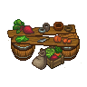

GoC Cooking table
| This article is a stub. You can help Graveyard Keeper Wiki by expanding it. |
| GoC Cooking table | |
|---|---|
 | |
Basic information
| |
Location(s)
| |
| Refugee camp |

The GoC Cooking table is a Game of Crones-specific construct, located in the refugee camp, just north of the garden. It crafts autonomously, presumably operated by the refugees - if not the cook, as her presence isn't required in order to construct it or be operated. The required materials need to be stored in the storehouse, and while the player cannot choose specifically which recipes are made, the recipes do not need to first be unlocked through Cookery.
Cost
| Icon | Materials Required | Energy | Notes |
|---|---|---|---|
| 12× Nails 6× Flitch |
- |

Recipes
| Tier 1 | |||
|---|---|---|---|
| Item Produced | Materials Required | Time | Requirement |
| 1× Flour |
1× Wheat |
0:04 | |
| 4× Dough |
2× Flour 2× Water |
0:04 | |
| 1× Grated carrot |
1× Carrot |
0:10 | |
| 1× Grated beets |
1× Beet |
0:10 | |
| 6× Mushroom patty |
6× Edible mushroom 2× Dough |
? | Cooking Table II |
| 6× Vegetable patty |
1× Pumpkin 1× Carrot |
? | Cooking Table II? |
| 4× Vegetable salad |
1× Onion 1× Beet 1× Cabbage |
0:15 | Cooking Table II? |
| 4× Creamy vegetable soup |
1× Carrot 1× Lentils 1× Pumpkin |
0:30 | Cooking Table II? |
| 4× Lentil cutlets |
2× Lentils |
0:30 | Cooking Table II? |
| 4× Vegetable stew |
1× Pumpkin 1× Beet 2× Cabbage |
1:00 | Cooking Table II? |
| 4× Cream of mushroom soup |
6× Edible mushroom 1× Jug of milk |
? | Cooking Table
II |
| 1× Boiled egg |
1× Chicken egg |
? | Tanner's
animal farm |
| 4× Pastry dough |
2× Flour 1× Jug of milk 1× Egg |
0:04 | Tanner's
animal farm |
| 4× Honey pudding |
2× Egg 1× Butter |
Tanner's
animal farm | |
| 2x Cheese Pie | 1x Pastry dough
1x Cheese |
? | Tanners animal farm |
| 1x Cheese | 1x Jug of Milk | ? | Tanners animal farm |
Template:Navbox-Refugee camp